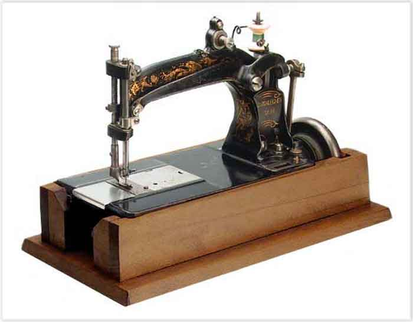
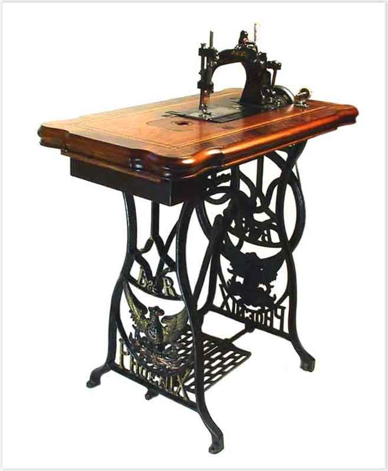
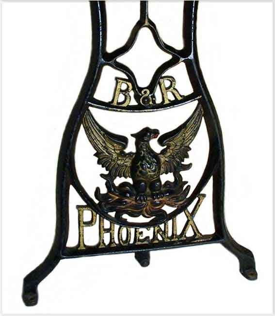
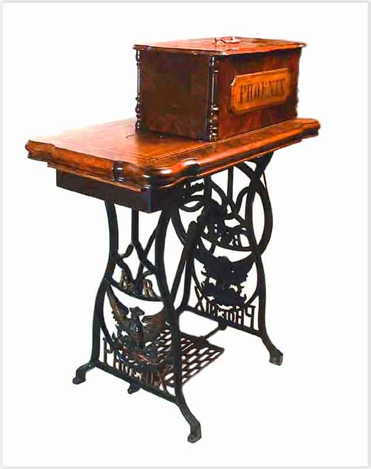

The NeedleBar
Baer & Rempel Class A
1880 - 1890
Small-type Rotary Hook machine with bobbin holder, copy of Wheeler & Wilson #8
Serial # 67362
/
Serial # 79668 & Base
/
Logo
Treadle Base & Cover
Serial # 67362

Serial # 79668 & Base

Logo

Treadle Base & Cover

© Alan Quinn 2003. All Rights Reserved
This page may not be reproduced or distributed in part or in whole without the prior written permission of the copyright owner